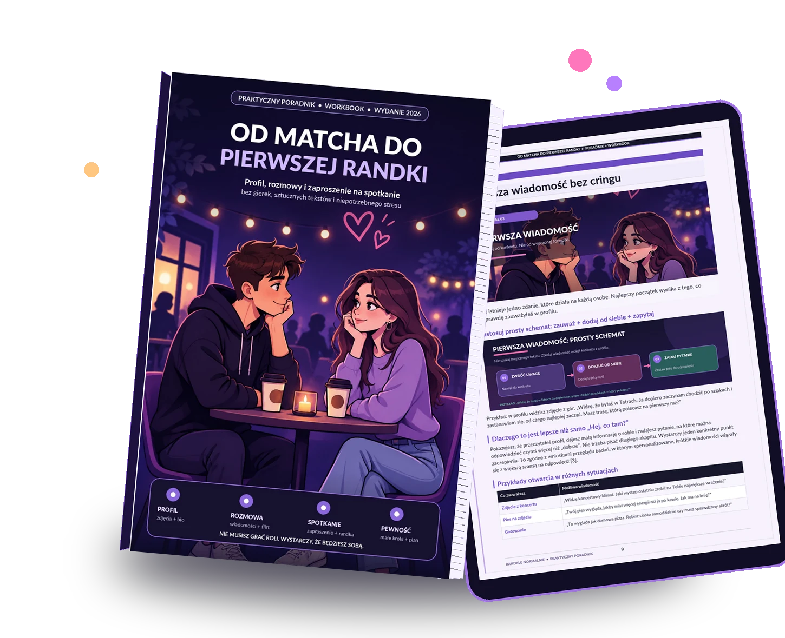

01
Profil jak z szablonu
Nie wiesz, co napisać w opisie i które zdjęcia wybrać, żeby pokazać siebie, a nie wyidealizowaną wersję.
Masz match, ale nie wiesz, co napisać? Rozmowy szybko się kończą, a zaproszenie na spotkanie wydaje się trudniejsze, niż powinno?
Przejdź krok po kroku od profilu i pierwszej wiadomości do naturalnego spotkania — bez gierek, sztucznych tekstów i udawania kogoś, kim nie jesteś.
Dla dorosłych mężczyzn, szczególnie w wieku 18–29 lat.

Randkowanie potrafi zablokować na kilku różnych etapach. Ten poradnik porządkuje je w jedną, prostą ścieżkę.
Nie wiesz, co napisać w opisie i które zdjęcia wybrać, żeby pokazać siebie, a nie wyidealizowaną wersję.
Nie wiesz, jak zacząć, żeby nie wysłać kolejnego „Hej, co tam?” albo sztucznego tekstu.
Zadajesz pytania, ale rozmowa przypomina przesłuchanie albo kończy się po kilku wiadomościach.
Analizujesz, czy to za wcześnie, czy za późno i jak zaproponować spotkanie bez presji.
Przeciągasz decyzję, nadmiernie analizujesz odpowiedzi i trudno Ci spokojnie przyjąć odmowę.
Nie wiesz, po czym poznać oszusta romantycznego i jak bezpiecznie umówić się z kimś poznanym online.
Zamiast szukać pojedynczych porad w kilkunastu miejscach, dostajesz logiczną kolejność działań, przykłady i arkusze do samodzielnego przećwiczenia.
Zobacz, co jest w środku →E-book prowadzi przez etapy randkowania, ale zostawia miejsce na własny styl i wzajemne dopasowanie.
Nie każdy kontakt przejdzie całą drogę — i to normalne. Celem jest sprawdzić, czy zainteresowanie jest wzajemne, a nie wymusić finał.
51 stron: 12 rozdziałów od profilu do planu na 30 dni, a do tego workbook i ściąga z szablonami. Kliknij rozdział, żeby zobaczyć, co będziesz umieć po jego przeczytaniu.
Możesz zobaczyć przykładowe strony z rzeczywistego pliku: profil, pierwszą wiadomość, przykładowe rozmowy i arkusz z workbooka. Kliknij stronę, żeby ją powiększyć.
Cztery wybrane strony z 51. To fragmenty publikacji, a nie pełny e-book.
W środku znajdziesz materiały, do których możesz wracać podczas korzystania z aplikacji i przygotowywania się do spotkania.
Audyt profiluSprawdź zdjęcia, bio i punkt zaczepienia.
Trzy własne pierwsze wiadomościPrzećwicz dopasowanie wiadomości do konkretnego profilu.
Mapa rozmowyZapisz, o co dopytać i co dodać od siebie.
Plan pierwszej randkiMiejsce, logistyka, tematy i refleksja po spotkaniu.
Plan na 30 dni z trackeremCztery tygodnie małych kroków i tabela postępów.
Jedna strona do zapamiętaniaChecklisty przed profilem, wiadomością, zaproszeniem i randką.
Poradnik nie obiecuje, że każda rozmowa skończy się randką. Daje Ci narzędzia do lepszego przejścia przez kolejne etapy.
Nie potrzebujesz gotowych tekstów na każdą sytuację ani nowej osobowości. Ćwiczysz jasną komunikację i pokazujesz siebie w autentyczny sposób.
Praktyczny poradnik randkowania bez gierek, sztucznych tekstów i niepotrzebnego stresu.
E-book łączy praktyczne przykłady z wybranymi publikacjami o randkowaniu online, komunikacji, pierwszym wrażeniu, zgodzie i bezpieczeństwie. Badania nie gwarantują matcha ani randki — pomagają zrozumieć kontekst.
Najważniejsze informacje o pliku, zakupie i sposobie korzystania z poradnika.
Przejdź do oferty →